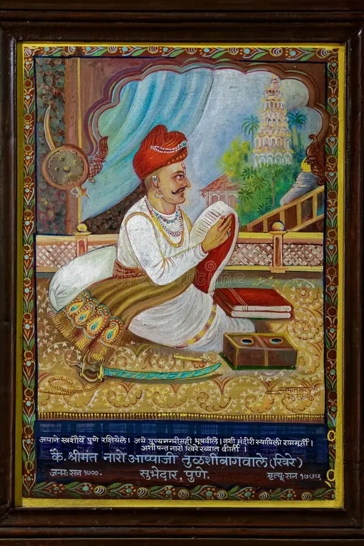

Peshwa (Prime Minister) : Moropant Trimbak Pingle
Peshwa (Prime Minister) : Moropant Trimbak Pingle
(1674)

Moropant Trimbak Pingale (1620 - 1683), was the first peshwa of the Maratha Empire, serving on Shivaji Maharaj's Ashta Pradhan (Council of Eight Ministers).
Moropant Trimbak Pingle was born to a Deshastha Brahmin family[2] in 1620 Nimgaon. In 1647, he joined Chhatrapati Shivaji Maharaj in establishing the Maratha Empire.
Military career
Further information: Battle of Pratapgarh and Battle of Salher
He was one of the warriors who participated in the successful 1659 battle of Shivaji Maharaj's forces against the forces of Bijapur's Adil Shah which immediately followed Adil Shah's general Afzalkhān's death at Jāwali. He also participated in the battles at Trimbakeshwar Fort and Wāni-Dindori against the Mughal Empire. He participated in Shivaji's invasion of Surat in 1664. He also participated in the Battle of Salher. Moropant surrounded and attacked the 25,000 strong Mughal infantry at Salher with his 20,000 infantry. Prominent Maratha Sardar and Shivaji's childhood friend Suryaji Kakde was killed by a Zamburak cannon in the battle. Chhatrapati Sambhaji son of Shivaji stayed with Moropant's relatives in Mathura after their escape from Agra.[citation needed]. Moropant introduced sound revenue administration to Shivaji's regime, and played an important role in resource planning concerning defenses and maintenance of strategic forts. He was also responsible for the construction and administration of Pratapgad. At Chhatrapati Shivaji's death, Moropant Pinglay was working as a supervisor of fort development activities in Nashik District for the Salher-Mulher forts.[citation needed] Under Shivaji Maharaj's successor, Chhatrapati Sambhaji, he also participated in the battle of Burhanpur in 1681 which resulted in the sacking of the important Mughal trade centre of Burhanpur. He was killed during an ambush by Mughal forces in 1683.